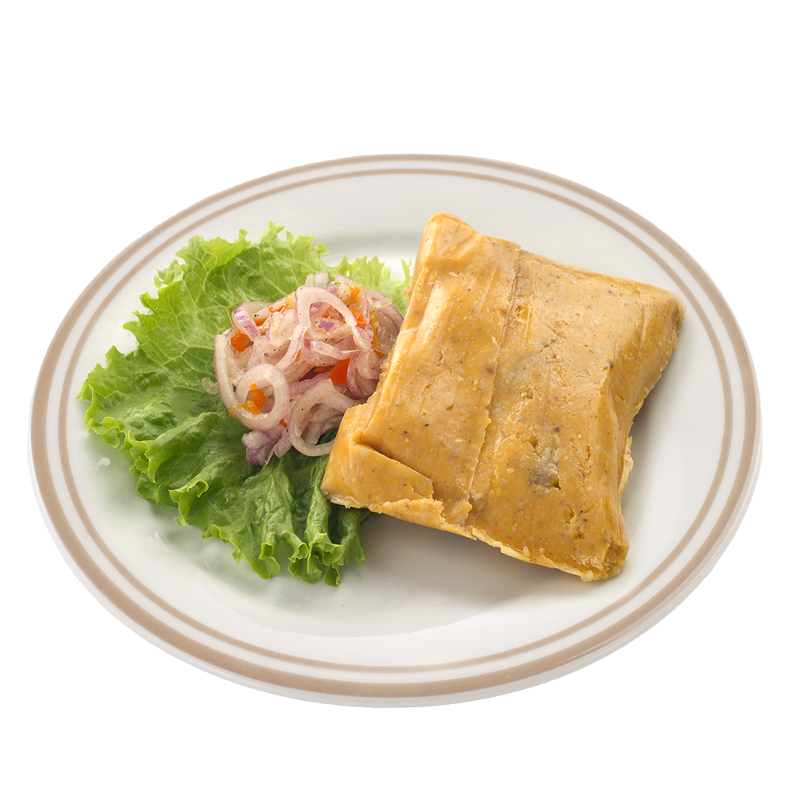

Tamal

★El tamal
🍞 🇵🇪 El tamal del Perú es un tamal hecho a base de maíz que es oriundo de Perú y se conoce en existencia precolombina. La palabra tamal es oriunda del idioma nahuatl que hablaron los mexicas. La palabra oriunda de la región andina es humita que viene del quechua.